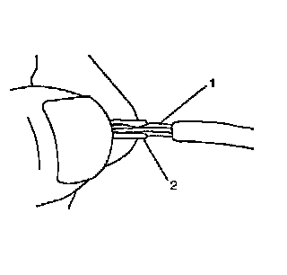
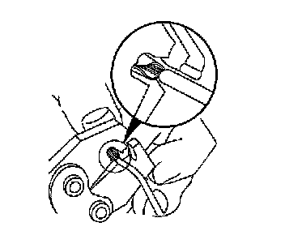
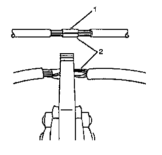
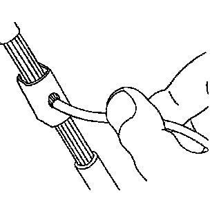
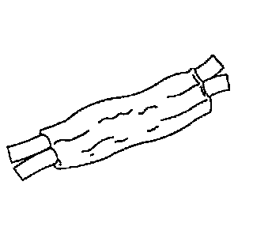
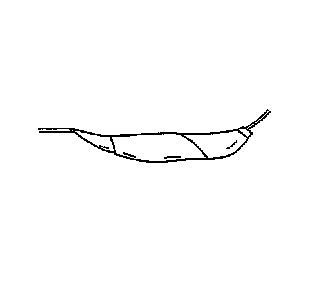

Splicing Copper Wire Using Splice Clips
SPLICING COPPER WIRE USING SPLICE CLIPS
IMPORTANT: When making a splice in an area that may be exposed to moisture use a crimp and seal splice sleeve instead of a Splice Clip. Refer to Splicing Copper Wire Using Splice Sleeves.
TOOLS REQUIRED
J-38125 Terminal Repair Kit
1. Open the harness.
- If the harness is taped, remove the tape.
- To avoid wiring insulation damage, use a sewing ripper in order to cut open the harness.
- If the harness has a black plastic conduit, pull out the desired wire.
2. Cut the wire.
- Cut as little wire off the harness as possible.
- Ensure that each splice is at least 40 mm (1.5 in) away from other splices, harness branches and connectors. This helps prevent moisture from bridging adjacent splices and causing damage.
3. Select the proper size and type of wire.
- The wire must be of equal or greater size than the original (except fusible link).
- The wire insulation must have the same or higher temperature rating.
- Use general purpose insulation for areas that are not subject to high temperatures.
- Use a cross-linked polyethylene insulated wire for areas where high temperatures are expected.
IMPORTANT: Use cross-linked polyethylene wire to replace PVC, but do not replace cross-linked polyethylene with PVC.
4. Strip the insulation.
- Select the correct size opening in the wire stripper or work down from the largest size.
- Strip approximately 7.5 mm (5/16 in) of insulation from each wire to be spliced.
5. Select the proper clip to secure the splice. Follow the instructions in the J-38125 in order to determine the proper clip size crimp tool and anvil.
6. Overlap the 2 stripped wire ends and hold them between thumb and forefinger.

7. Center the splice clip (2) over the stripped wires (1) and hold the clip in place.
- Ensure that the wires extend beyond the clip in each direction.
- Ensure that no insulation is caught under the clip.

8. Center the crimp tool over the splice clip and wires.
9. Apply steady pressure until the crimp tool closes.Ensure that no strands of wire are cut.

10. Crimp the splice on each end (2).

11. Apply 60/40 rosin core solder to the opening in the back of the clip. Follow the manufacturer's instructions for the solder equipment.

12. Tape the splice. Roll on enough tape in order to duplicate the thickness of the insulation on the existing wires.

13. Additional tape can be applied to the wire if the wire does not belong in a conduit or another harness covering. Use a winding motion in order to cover the first piece of tape.